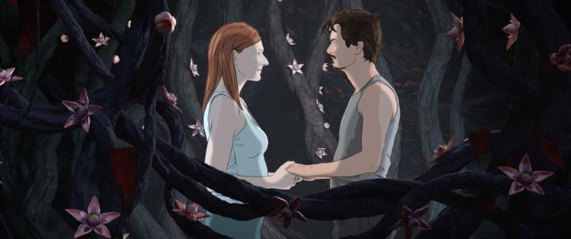

I wasn't sure if I should include 2023's "White Plastic Sky" as a 2D-animated feature film, but I decided rotoscope-animation (mixed with CGI backgrounds and props) counts. I should get around to adding "A Scanner Darkly" some time later.Screening at OIAF, "White Plastic Sky" is a foreign-language sci-fi distopian mystery. A city lives in seemingly high prosperity, but they are walled off from the inhospitable ruins beyond. Part of their success comes from a law where citizens must surrender themselves to a plantation at the age of 50, never to return. Dr. Stefan is compliant with the system, until he learns his wife, Nora, has suddenly signed up to volunteer herself early, and will be gone the following morning. Stefan races through red-tape to try to cancel the process, and in doing so, learns the truth of what becomes of the bodies. For most of the movie, it's a heist and adventure to steal Nora before the procedure completes, and a long journey through the wastelands to reverse the medical effects already in progress before it's too late.As far as science-fiction concepts go, the story here uses some familar tropes (I'm avoiding spoilers here), but took them in directions I wasn't expecting. As a thought-provoking plot, I was quite satisfied. This is only one half of the themes in place though, the other being the romance and human-interaction between the two leads. What drove Nora to be distant and so willing to end her life early? Can Stefan understand this enough to dissuade her? Is the great lengths he goes to worthwhile, and would he be able to cope if he fails to save her? It's a good dynamic to keep the audience invested beyond their curiosity of the world-building. Overall, the plot is solid and "good," but not overwhelmingly great compared to the strongest science fiction stories available, and is "distinct," but not wholly unique. And while I wanted to wait to the ending (and it's a good ending), the journey took a while and tried my patience a bit. For the most part, the production quality was strong, especially compared to the other indie features it competed against at that particular film festival. The environments are large in scope, mostly clean and sterile and somewhat blank, but makes for good imagery. The choice to use rotoscope animation for the characters helps define their human motions and expressions, capturing the acting of the cast well, but at the expense of lacking stylistic designs to improve visual appeal. What impressed me most was the quality of the musical score and the voice acting (in Hungarian with subtitles), which elevated the experience. Your love of science fiction will be a big factor in your interest with "White Plastic Sky," and if you've seen a lot of the genre, you might be less impressed than I was. But I found it to be a mentally-stimulating adventure with an strong ending that stayed with me.
- "Ani" More reviews can be found at : https://2danicritic.github.io/ Previous review: review_Whisper_of_the_Heart Next review: review_Window_Horses_-_The_Poetic_Persian_Epiphany_of_Rosie_Ming